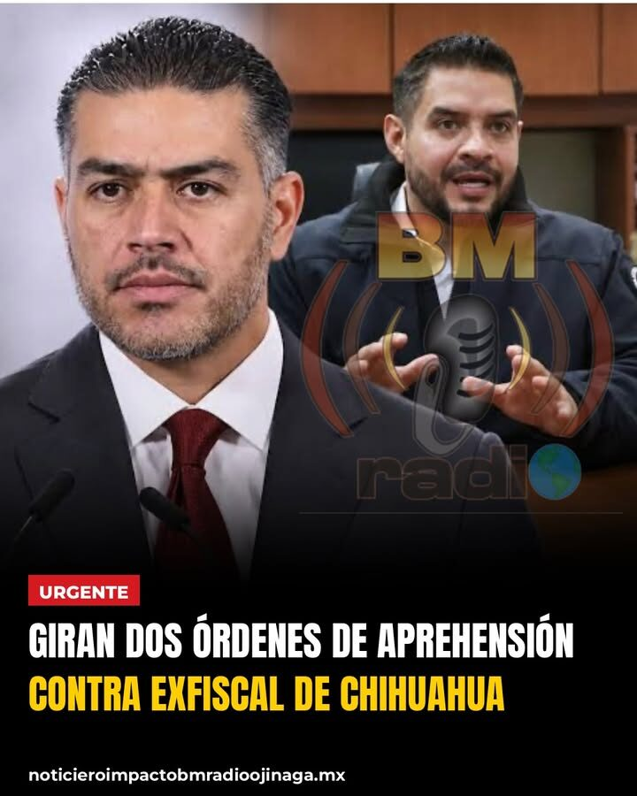
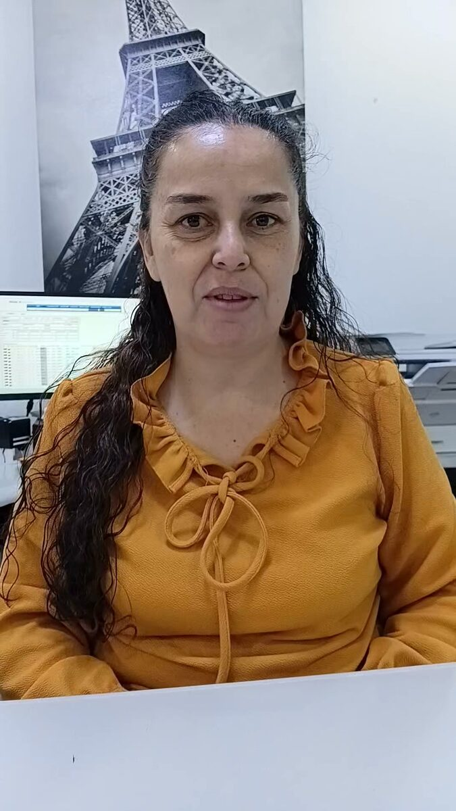
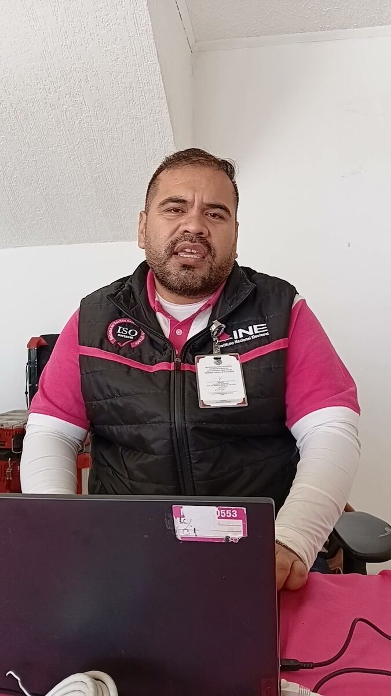
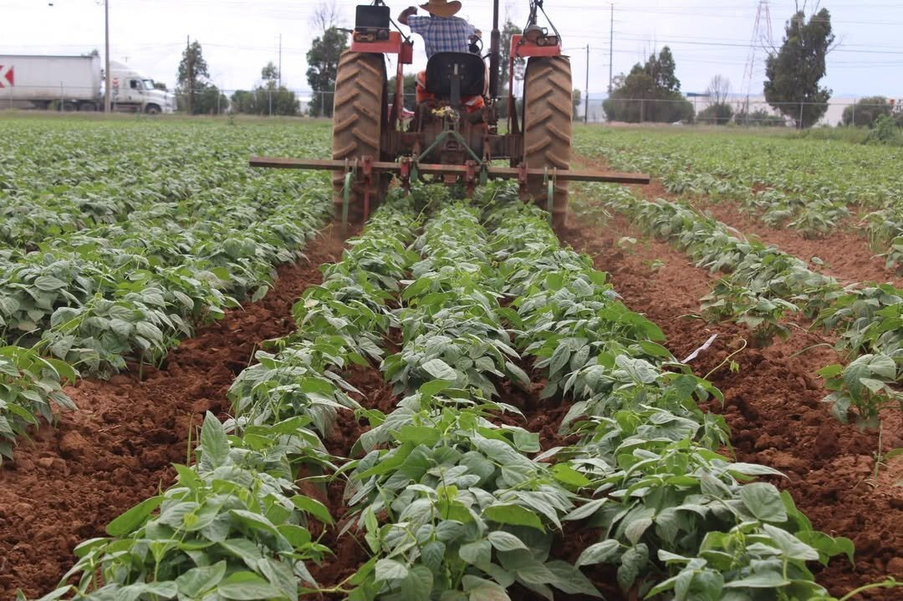
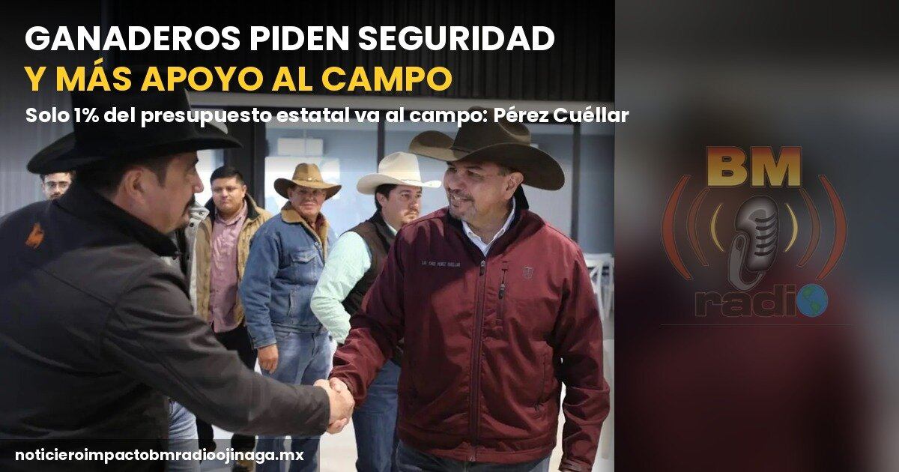

Policiaca
Aseguran vehículos, explosivos adaptados para drones, armas, cargadores y equipo táctico; autoridades reportan un enfrentamiento sin personas fallecidas ni lesionadas. Aldama, Chihuahua.– Autoridades estatales confirmaron los resultados del operativo interinstitucional de seguridad desplegado en el municipio de Aldama, donde se logró el rescate de dos personas que se encontraban privadas de la libertad, así como la detención de tres presuntos integrantes de una célula criminal. A través de un comunicado oficial, se informó que durante las acciones coordinadas entre la Secretaría de Seguridad Pública del Estado (SSPE) y la Fiscalía General del Estado (FGE), también fueron asegurados dos vehículos, explosivos adaptados para ser lanzados desde drones, armas de fuego, cargadores abastecidos y equipo táctico. De acuerdo con la información preliminar, durante el desarrollo del operativo se registró un enfrentamiento armado entre elementos de las fuerzas especiales y civiles armados. La agresión fue neutralizada y, según el reporte oficial, el incidente concluyó sin personas fallecidas ni lesionadas. Las autoridades señalaron que la célula criminal intervenida podría estar relacionada con otro enfrentamiento registrado la semana pasada contra fuerzas del orden, por lo que las investigaciones continúan para establecer su posible participación en otros hechos delictivos. Ante estos acontecimientos, se instruyó reforzar la presencia de las corporaciones de seguridad en Aldama y sus zonas aledañas, además de intensificar la búsqueda de posibles involucrados y preservar los indicios para las investigaciones correspondientes. Finalmente, se informó que los tres detenidos y todo lo asegurado, incluyendo armas, explosivos, drogas, vehículos y demás evidencias, serán puestos a disposición de las autoridades competentes para continuar con el procedimiento legal. El operativo se mantiene activo como parte de las acciones para reforzar la seguridad en la región.
Local
En este video, vecinos del centro de Ojinaga manifiestan su inconformidad por la presencia de plagas y animales que pueden representar un riesgo para la salud pública, y cuestionan la falta de recorridos de inspección y acciones preventivas por parte del Departamento de Gobernación Municipal. Señalaron que las autoridades deben trabajar de manera preventiva y pidieron que se realicen las inspecciones necesarias en esta zona tan concurrida de la ciudad. Mira el video completo en Facebook.
Estatal
En este video, el alcalde de Ciudad Juárez, Cruz Pérez Cuéllar, asegura que los programas sociales del Gobierno Federal han afectado los intereses de quienes antes se beneficiaban de los recursos públicos, y destaca que hoy esos recursos se destinan a apoyos como la pensión para mujeres de 60 a 64 años. También cuestionó la postura del Partido Acción Nacional frente al presupuesto federal y señaló que los apoyos sociales deben mantenerse. Mira el video completo en Facebook.
Estatal
El Gobierno Municipal de Ciudad Juárez anunció que no contempla aumentar el impuesto Predial durante 2027, por lo que los propietarios de viviendas y terrenos que no registren modificaciones en sus inmuebles pagarían la misma cantidad que durante el presente año. El alcalde Héctor Ortiz Orpinel informó que el proyecto de ingresos municipales no considera incrementos al impuesto por concepto de inflación. No obstante, el monto a pagar podría variar en aquellos casos donde existan modificaciones en el valor catastral de los inmuebles, como consecuencia de compraventas, ampliaciones u otros cambios que impacten su valoración. La propuesta deberá incorporarse a la Ley de Ingresos Municipal para el ejercicio fiscal 2027 y completar el proceso de revisión y aprobación correspondiente. De concretarse la medida, los contribuyentes que no realicen modificaciones en sus propiedades mantendrían el mismo pago del impuesto Predial que realizaron durante 2026.
Policiaca
Una investigación de The New York Times reveló que Guillermo Zuany Portillo, exfiscal de Operaciones Estratégicas y Antisecuestro de Chihuahua, habría facilitado durante más de seis meses la participación de agentes de la CIA en entrenamientos y operativos de policías estatales. De acuerdo con el reportaje, los agentes estadounidenses no solo aportaban inteligencia y asesoría táctica, sino que también acompañaban a policías mexicanos en misiones contra organizaciones criminales. Incluso habrían participado en operativos para intentar detener a líderes del narcotráfico y en intervenciones en casas de seguridad. La investigación señala que algunos agentes portaban armas, equipo táctico e incluso chamarras con insignias del estado de Chihuahua, mientras colaboraban directamente en las operaciones.
Policiaca
El secretario de Seguridad Pública del Estado, Luis Ángel Aguirre Rodríguez, informó que hasta este martes se registran 23 homicidios dolosos en Chihuahua, ocho de ellos en el municipio de Chihuahua. Las corporaciones mantienen operativos en las zonas con más incidencia. En el reporte no aparecen hechos en Ojinaga ni en los municipios vecinos.

Policiaca
El secretario de Seguridad federal, Omar García Harfuch, confirmó este martes en la conferencia matutina que la Fiscalía General de la República y la Fiscalía del Estado tienen, cada una, una orden de aprehensión contra Guillermo Zuany Portillo, exfiscal de Operaciones Estratégicas de Chihuahua. El caso tiene que ver con la participación de agentes estadounidenses en un operativo en la Sierra Tarahumara. Según medios nacionales, el exfuncionario tramitó un amparo que por ahora frena la orden estatal y se desconoce su paradero.
Local
La profesora Silvia Fernández Leyva, directora del Instituto Ojinaguense de la Mujer, informó que se realizarán diversas actividades por el mes de la violencia contra la mujer. Mira el video completo en Facebook.

Local
La licenciada Mayra Muñoz Díaz, oficial del Registro Civil en Ojinaga, habló sobre el programa Soy México, que finaliza el 31 de noviembre. Mira el video completo en Facebook.
Local
El licenciado Edir Molina Mena, director del Registro Público de la Propiedad, explicó que cualquier notaría del estado de Chihuahua puede ingresar documentos al sistema. Mira el video completo en Facebook.

Local
El ingeniero Marco A. Ávalos Ramírez, encargado del módulo del INE en Ojinaga, informó que el módulo estará hasta el viernes de esta semana. Mira el video completo en Facebook.
Local
Se recomienda a los automovilistas extremar precauciones al circular por la carretera que conecta el entronque a Camargo con Ojinaga, debido a la presencia de bancos de niebla que reducen considerablemente la visibilidad en algunos tramos. Ante estas condiciones, se exhorta a los conductores a disminuir la velocidad, mantener una distancia adecuada entre vehículos, encender las luces bajas y evitar adelantamientos cuando no exista suficiente visibilidad. Asimismo, se recomienda conducir con paciencia y mantenerse atentos a las condiciones del camino para prevenir accidentes. La recomendación es evitar riesgos y llegar con bien a su destino.
Estatal
Solo el 36.3% de estos negocios son liderados por mujeres, de acuerdo con el estudio “Mujeres en las Empresas 2026” del IMCO. Chihuahua, Chih.- Chihuahua registra la menor proporción a nivel nacional de micro, pequeñas y medianas empresas (mipymes) encabezadas por mujeres, al alcanzar apenas un 36.3%, de acuerdo con el estudio “Mujeres en las Empresas 2026: Una mirada a las MiPymes”, elaborado por el Instituto Mexicano para la Competitividad (IMCO). El análisis coloca a la entidad por debajo de Quintana Roo, que registra un 37.1%, y Baja California, con 37.2%, estados que también presentan una baja participación femenina en la dirección de este tipo de negocios. En contraste, Oaxaca encabeza los indicadores con un 56.6% de mipymes lideradas por mujeres, seguido de Guerrero, con 51.8%. Estas son las únicas entidades donde más de la mitad de las empresas de este segmento están bajo la dirección de mujeres. El estudio también revela diferencias en los niveles de informalidad empresarial. Durante el segundo trimestre de 2026, Oaxaca, Guerrero y Chiapas registraron tasas superiores al 75%, mientras que Chihuahua presentó un indicador del 33%. Los resultados reflejan los retos que enfrenta Chihuahua para fortalecer la participación de las mujeres en el sector empresarial, particularmente en materia de emprendimiento, acceso a financiamiento y desarrollo de negocios. El diagnóstico del IMCO pone de manifiesto la necesidad de impulsar condiciones que permitan a más mujeres iniciar, dirigir y consolidar empresas, así como ampliar sus oportunidades de participación en la economía estatal.

Nacional
La sequía que afecta a distintas regiones productoras provocaría una importante reducción en la cosecha de frijol, con una pérdida estimada de más de 50 mil toneladas, de acuerdo con las previsiones del sector agrícola. El impacto de las condiciones climáticas habría ocasionado la pérdida de alrededor del 60 por ciento de la superficie cultivada, situación que anticipa una menor disponibilidad del grano en el mercado y podría presionar al alza su precio durante los próximos meses. Ante este panorama, productores estiman que el kilogramo de frijol podría superar los 25 pesos, debido a la disminución de la producción y la oferta disponible. A esta situación se suma la inconformidad por el precio de garantía anunciado por el Gobierno Federal, que pasó de 27 a 20 pesos por kilogramo, una reducción que, señalan, representa un desafío para los agricultores que enfrentan mayores costos de producción y pérdidas derivadas de la sequía. Los productores advierten que la combinación de menores cosechas y precios de garantía más bajos podría afectar la rentabilidad del campo, por lo que consideran necesario revisar las condiciones de comercialización y los apoyos destinados al sector agrícola. La situación mantiene la preocupación entre los agricultores, quienes esperan que se establezcan mecanismos que permitan proteger sus ingresos y garantizar condiciones más favorables para la producción de alimentos.
Estatal
Chihuahua, Chih.– El coordinador estatal de la Cuarta Transformación en Chihuahua, Cruz Pérez Cuéllar, acudió al primer cuadro de la capital del estado para grabar un spot, donde también fue abordado por representantes de los medios de comunicación. Durante el encuentro con los reporteros, Pérez Cuéllar habló sobre los mecanismos que utilizará Morena para definir a sus próximos representantes en los municipios de Chihuahua. Explicó que en algunos municipios el método de selección será mediante encuestas, siempre con el aval de la Comisión Nacional de Elecciones de Morena. El coordinador estatal señaló así uno de los mecanismos que contempla el partido para determinar sus perfiles, dentro del proceso de organización y definición de sus representantes territoriales. La selección de los perfiles será un tema de interés político en los municipios de Chihuahua, particularmente rumbo a los próximos procesos electorales.
Policiaca
Durante un cateo a una vivienda en la colonia San Uriel, en Hidalgo del Parral, las autoridades aseguraron más de 55 kilos de metanfetamina, además de cocaína, armas de fuego y cartuchos. Dos hombres fueron detenidos. Noticiero Impacto BM Radio Ojinaga | noticieroimpactobmradioojinaga.mx
Nacional
La presidenta Claudia Sheinbaum aseguró este lunes en su conferencia que el pago en efectivo "sigue estando permanente". Explicó que el pago digital se irá introduciendo poco a poco, solo en gasolineras y casetas, y que se informará con tiempo. Es una buena noticia para quienes no usan tarjeta. Noticiero Impacto BM Radio Ojinaga | noticieroimpactobmradioojinaga.mx
Nacional
Por segunda semana seguida, Hacienda redujo el apoyo fiscal a los combustibles. Del 7 al 13 de noviembre, el subsidio al diésel bajó a 1.59 pesos por litro, un peso menos que la semana anterior. Con este ajuste, quienes cargan Magna pagan 4.96 pesos de IEPS por litro y quienes cargan Premium, 4.27 pesos. El domingo, los precios promedio nacionales fueron de 23.70 pesos la Magna, 28.59 la Premium y 26.99 el diésel. Noticiero Impacto BM Radio Ojinaga | noticieroimpactobmradioojinaga.mx

Estatal
Cruz Pérez Cuéllar, coordinador estatal de la Defensa de la Transformación en Chihuahua, se reunió este lunes en la capital del estado con ganaderos de 13 municipios, entre ellos Coyame, Aldama, Juárez, Cuauhtémoc y Villa Ahumada. Los productores le plantearon la inseguridad en el campo y le pidieron más programas de apoyo, más presupuesto y una secretaría estatal para el sector. Pérez Cuéllar señaló que el presupuesto estatal apenas destina el 1 por ciento al campo y se comprometió a gestionar recursos ante el Gobierno Federal. Sobre la inseguridad, dijo: “Vamos a agarrar el toro por los cuernos”.
Estatal
El Municipio de Ciudad Juárez puso a trabajar este lunes tres nuevas barredoras mecánicas en avenidas principales, calles secundarias y la Zona Centro, con una inversión de casi 13 millones de pesos. Según la Dirección de Limpia, cada unidad puede barrer hasta 55 kilómetros por jornada, contra 5 a 7 kilómetros de una cuadrilla de 12 trabajadores. Las barredoras trabajarán de día y de noche.